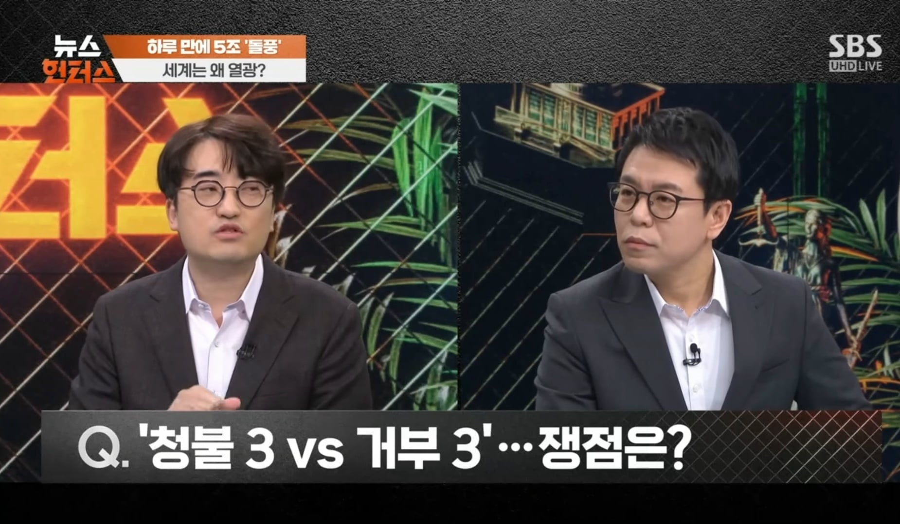
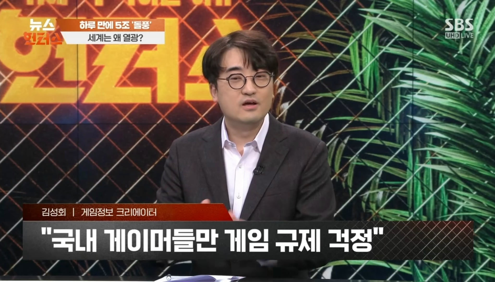

앵커:기관에서 이걸 못하게하려는 움직임이 있었다고 하던데
그것도 파헤치지 않았습니까?
김성회:이 뜨거웠던 GTA6의 한국 심의 과정에 회의록을 입수
해서 공개했는데요 이것 역시 마찬가지입니다 정말 아직도
답답하지만 이정도 많이 발전했구나 무슨의미냐면 과거에 몇
년전만해도 우리나라에서 게임을 할수있다 없다 결정해주시는
보시는 학부모 단체장이라든가 아니면 살면서 게임 한판도
안해보신 70대 할아버지라든가 이런분들이 게임을 할수있다
없다는걸 골라 주셨어요 그때 이 GTA6가 나왔다면 당연히 심의
거부당했을겁니다
우리나라에서만 못하는 게임이 되겠죠 그나마 민간 기구로
그 심의 권한이 이양되고 있기 때문에 첫번째 심의 회의에서
찬성3 반대3 이렇게 아슬아슬하게 갈렸습니다
그러면서 2차심의 3차 심의까지 넘어가면서 간신히 이 게임이
우리나라에서도 할수있게 되었는데 발전한거죠 그런데 답답한
것은 뭐냐면요 왜 우리나라 게이머들만 아 이 신작 게임을 할수
있을까 없을까 법으로 막히면 어떡하지? 이것을 왜 걱정해야
되냐는 겁니다 심지어 이게임이 사우디 아랍에미리트 정말로
선정성과 폭력성이 보수적인 이슬람국가에서도 진작에 통과
되었거든요
앵커:음....
김성회:그런데도 우리나라는 끝까지 심사위원들이 고민하면서
출시 거의 한달전까지 계속 전전긍긍하다가 간신히 통과됐다는
거 이걸 생각해보면 정말 답답한일인거죠
다른건 모르겠고 저런일 관련해서 겜돌이들 대변해주는 제일 메이저한 창구가 김성회는 맞지않나? 응원함